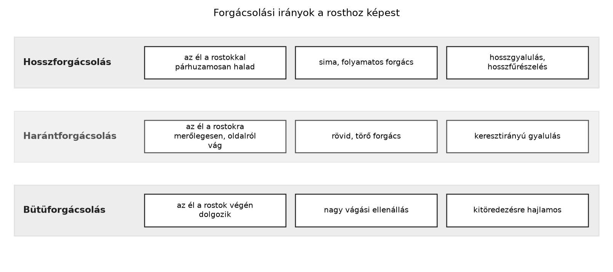

A műhelyben azt látod, hogy ugyanaz a gyalugép vagy marógép az egyik deszkán selymes felületet hagy, a másikon pedig szálkás, kiszakadt, hullámos felületet. A különbség gyakran nem a gépben vagy a szerszám élességében van, hanem abban, hogy a szerszám éle hogyan találkozik a fa rostjaival, és milyen szerszámszögekkel dolgozol. Ha megérted a faforgácsolás alapjait, előre meg tudod mondani, hogy egy művelet mikor ad tiszta felületet, és mikor fogja a fa szálát feltépni. Ez az alapja a kézi gyalulásnak, a fűrészelésnek, a marásnak és minden gépi megmunkálásnak.
Vegyél egy gyaluvasat. A vas a fába hatoló része egy ék, amelynek hegyes éle választja le a forgácsot a munkadarabból. Ha a vas éle éles, és a megfelelő irányban halad, a fa rostjai a vas előtt elválnak, és a leváló forgács simán felcsavarodik. Ha viszont az él tompa, vagy a rostra rossz irányban vág, a rostok nem elválnak, hanem beszakadnak, és a szerszám előtt meghasad a fa. Ugyanígy viselkedik a körfűrészfog, a maróél vagy a szalagfűrész foga: mindegyik ékek sorozata, amelyek egymás után, vagy folyamatosan forgácsot választanak le.
Definíció. A faforgácsolás olyan anyagleválasztási művelet, amelynek során a szerszámél a faanyagból forgácsot választ le. A forgács a leválasztott faanyagdarab, amelynek mérete, alakja és leválási módja a felületi minőséget, a szerszámterhelést és a por-, illetve forgácsképződést is meghatározza.
Szabály. A faforgácsoló szerszám aktív része ék. Az ék alakját három jellemző szög határozza meg:
A három szög összege a vágási síkra merőleges helyzetből kiindulva mindig :
A gyakorlatban használják a vágószöget is. Jele δ (delta).
Definíció. A vágószög δ a homlokfelület és a vágási sík közötti szög. Mivel a homlokfelület és a vágási sík közötti szög a hátszög és az ékszög együttesével egyenlő:
A vágószög megmutatja, hogy az él milyen meredeken lép be a fába. A nagyobb vágószög általában meredekebb, határozottabb vágást ad, de nagyobb erőt igényel; a kisebb vágószög könnyebben hatol, viszont fokozottabban hajlamos a fa szálának feltépésére.
Megjegyzés. A β jel itt ékszöget jelent. A faanyagismeretben a zsugorodás jelölésére is β szerepel; a két jelentést a szövegkörnyezet egyértelműen elkülöníti.
Az ábrán a szerszám jobbról balra halad. A vágóél a vágási síkon fekszik; a hátfelület a vágóéltől hátrafelé α szöggel emelkedik a megmunkált felület fölé, a homlokfelület a vágási síkra állított merőlegeshez képest γ szöggel dől, a kettő között van a β ékszög. A forgács a homlokfelületen csúszik fel. A HTML-változatban az α és a β csúszkával állíthatod a szögeket; a program kiszámolja γ-t és δ-t, és jelzi, ha γ negatív lesz.
Számítás. Ha egy marókésnél az ékszög β = 50°, a hátszög α = 15°, akkor a homlokszög:
A vágószög pedig:
ami megegyezik a értékkel. ∎
Definíció. A főmozgás a szerszámnak vagy a munkadarabnak az a mozgása, amely a forgácsot ténylegesen leválasztja. A mellékmozgás (előtolás) az a mozgás, amely a szerszámot mindig a még megmunkálatlan anyaghoz vezeti.
A kézi gyalulásnál a gyalu toljuk a fa fölött; a gyaluvas hosszirányú mozgása a főmozgás, a vas beállítása pedig az állítómozgás. Az egyengető gyalugépnél a késtengely forgása a főmozgás, a munkadarab kézi vagy gépi előtolása a mellékmozgás. A vastagsági gyalugépnél ugyancsak a késtengely forog, az előtoló henger mozgatja a deszkát. A körfűrészgépnél a fűrészlap forgása a főmozgás, a munkadarab tolása a mellékmozgás. A marógépnél a marószerszám forgása a főmozgás, az asztal mentén való mozgatás az előtolás.
Szabály. A főmozgás lehet egyenes vonalú vagy körpályás. Az egyenes vonalú főmozgás jellemző a kézi gyalura, a láncfűrész egyenes fogvágó szakaszára és a vésőre; a körpályás főmozgás a körfűrészlapok, marószerszámok, gyalukéstengelyek és csiszolószalagok esetén. A körpályás szerszámok élgeometriája menet közben ugyanúgy ékként dolgozik, mint az egyenes vonalú szerszám, de a vágási sebesség iránya a körvonal mentén folyamatosan változik.
Figyelem. A körpályás szerszámnál az ellenirányú és az egyirányú marás, valamint a fűrészfog vágási iránya meghatározza a forgács leválási jellegét. Ezt a Forgácsolási és előtoló sebesség, fogankénti előtolás és a Faipari gépek biztonságtechnikája: veszélyek és védőberendezések alfejezetekben részletezzük. Egyirányú marás (a szerszám vágási iránya egyezik az előtolás irányával) kézi előtolással tilos és különösen balesetveszélyes, mert a szerszám a munkadarabot behúzza, elrántja. Kézi előtolásnál mindig ellenirányú marással dolgozunk: a szerszám a munkadarabot a kezelő felé nyomja vissza, ezért az előtolás ellenőrizhető.
A fa irányfüggő anyag. Ezért a szerszám élét a rostirányhoz képest három alaphelyzetben dolgoztathatjuk:

A fa rostjai nem mindig párhuzamosak a munkadarab felszínével. A gyakorlatban a deszkán a rostok enyhén lejthetnek, vagy a növekedési hibák miatt ívelten futnak. Ezért a vágásirányt a tényleges rostirányhoz kell igazítani.
Szabály. Rostiránnyal forgácsolunk, ha a rostok a szerszám haladási irányában a megmunkált felület felé futnak ki (a deszka élén nézve a rostvonalak a haladás irányában emelkednek). Ilyenkor az él előtti hasadás a forgácsba fut ki, a felület sima. Rostirány ellen forgácsolunk, ha a rostok a haladás irányában a fába befelé futnak: a hasadás a vágási sík alá megy, a fa a szerszám előtt meghasad, a felület kiszakad, szálkássá válik.
Az ábrán a szerszám balról jobbra halad. A bal oldali képen a rostvonalak a haladás irányában a felső lap felé emelkednek: az él előtti hasadás a forgácsba fut ki, a felület sima. A jobb oldali képen a rostok a haladás irányában a fába befelé futnak: a hasadás a vágási sík alá megy, és a felületből darabok szakadnak ki. A rostirányt ezért a deszka élén (oldallapján) látható rostvonalakból olvasd le.
Példa. Ha egy deszka a hossza mentén úgy fekszik, hogy a rostok a bal kéz felőli oldalon magasabban, a jobb oldalon mélyebben futnak, akkor jobbról balra forgácsolunk rostiránnyal, mert haladás közben a rostvonalak emelkednek a felület felé, a hasadás a forgácsba fut ki. Ha balról jobbra gyalulnánk, a rostok a haladás irányában a fába futnának be, a hasadás a vágási sík alá menne, és a felület kiszakadna. A rostirányt a deszka élén (oldallapján) látható rostvonalakból olvassuk le; a kézi simítás csak kiegészítő próba, nem helyettesíti a rostvonalak megfigyelését.
Továbbvitt eredmény. A szerszámszögek és a forgácsolási irányok ismerete nélkülözhetetlen a Forgácsolási és előtoló sebesség, fogankénti előtolás képleteihez, a Kézi fűrészek és a kézi fűrészelés technológiája helyes fogásiránya, valamint a Faipari gépek biztonságtechnikája: veszélyek és védőberendezések kockázatértékelése során.
Forgácsképződés. A fa viselkedése éles szerszám esetén a következő. Az él a homlokfelületen összenyomja a fa rostjait. Elérve a fa nyírószilárdságának határát, a rostok az él előtt elnyíródnak, és a leváló darab a homlokfelület mentén fölcsúszik. Ha a szögek és a vágásirány megfelelőek, a forgács folyamatos vagy rövid, egyenletes szakaszokból áll. Ha a rostok rövidek, a fa rideg, vagy az él tompa, a forgács törik, morzsálódik, és a felület durvább lesz.
Felületi hibák. A faipari forgácsolás leggyakoribb felületi hibái:
A leggyakoribb tünetek, okaik és a teendők egymástól független hármasok; mindig a tünettől indulj, és soronként keresd az okot:
| Tünet | Lehetséges ok | Teendő |
|---|---|---|
| Szálkás, kiszakadt felület | rostirány elleni forgácsolás, tompa él | fordítsd meg a munkadarabot (vagy a vágásirányt), élezz |
| Égett, barna folt | tompa él, túl lassú előtolás, túl nagy fordulatszám | élezz, növeld az előtolást, ellenőrizd a fordulatszámot |
| Szabályos, látható hullámok | nagy fogankénti előtolás, eltérő késmagasság | csökkentsd az előtolást, állítsd egy magasságra a késeket |
Egyenes vonalú szerszám például a kézi gyalu vas vagy a véső: a szerszám a munkadarab fölött egyenesen mozog, a szerszám geometriája a teljes vágási hosszon közel állandó. A forgácsvastagság viszonylag egyenletes.
Körpályás szerszám esetén – mint a maró, a körfűrészfog, a gyalukéstengely – minden él rövid, ciklikusan ismétlődő forgácsot választ le. A forgácsvastagság a pálya mentén változik; a szerszám fogai fölváltva lépnek a fába. A felületi minőség szempontjából itt nem csak a szerszámszögek, hanem a fogankénti előtolás és a szerszám kiegyensúlyozása is meghatározó. A körpályás szerszámoknál a szerszám átmérője, éleinek száma és a fordulatszám együtt adja a vágási sebességet, amint azt a Forgácsolási és előtoló sebesség, fogankénti előtolás alfejezetben tárgyaljuk.
A bal oldali képen a gyaluvas egyenesen halad, a forgács vastagsága végig azonos. A jobb oldali képen a késtengely forog, a munkadarab közben egyenesen halad: minden kés egy vékony elejű, vastagodó vesszőforgácsot választ le, és a felületen fogankénti előtolásnyi () távolságú, sekély ívek maradnak (az ábrán erősen nagyítva). A HTML-animációban az előtolás, a fordulatszám és a késszám állítható; az „egyirányú” kapcsoló a kézi előtolásnál tilos forgatási irányt mutatja.
Adott: egy kézi gyalu vasán az ékszög β = 30°, a
hátfelület dőlése a munkadarabhoz képest α = 8°. A gyaluval
bütüfelületet simítunk. A szerszám éle éles.
Keresett: a homlokszög γ és a vágószög δ; magyarázd
meg, hogyan befolyásolja ez a bütügyalulás minőségét.
Megoldás:
A szögek összefüggéséből:
A vágószög:
vagy .
Értékelés. A kapott kb. 38°-os, kis vágószög a bütüfához megfelelő. A bütüfa rostjai rövidek és törékenyek, ezért a tiszta bütüfelülethez a gyakorlatban kis vágószögű, kis ágyazási szögű (alacsony ágyazású) bütügyalut használnak: a rövid rostokat kis vágószöggel lehet tisztán elnyírni. A nagy vágószöget (kb. 50–55°) inkább a hosszlapon, csavarodott vagy váltakozó rostú fánál alkalmazzuk a kiszakadás ellen. A bütüfelület szélén a kitöredezés ellen a munkadarab szélét letörjük, vagy segédlécet szorítunk mellé. (Ellenőrizendő: a szerszámszögek tájékoztató értékei gyártótól függenek.)
Megjegyzés. A példa azt mutatja, hogy a szögek számítása egyszerű, de a megfelelő szög kiválasztása a faanyagtól, a rostiránytól és a művelettől függ. A gyakorlatban mindig a gyártói adatlap és a gépkönyv adja az ajánlott szögeket.
Szabvány. A faipari gépek és szerszámok biztonsági követelményeit az MSZ EN ISO 19085 szerszámgép-szabványsorozat rögzíti. A forgácsoló szerszámok – gyalukések, marószerszámok, fűrészlapok – mérete, anyaga, legnagyobb megengedett fordulatszáma és jelölése e szabványsorozatba tartozó műszaki előírásokon és a gyártói dokumentáción alapul. A szerszám geometriai adatait (szögek, fogszám, élezés) a gyártó adja meg, és a szerszámon általában feltünteti a megengedett legnagyobb fordulatszámot. Ellenőrizendő: a pontos szabványszám és a gépbiztonsági rendelet hatályos megnevezése.
Gépbiztonság. A forgácsoló szerszámot élezni, beállítani vagy cserélni csak akkor szabad, ha a gép leállt, a szerszám megállt, és a gép áramtalanított. Tompa, repedt, csorbult vagy nem a gépre való szerszámot használni tilos. A szerszámgépen csak akkor dolgozz, ha betanítottak, és az oktató felügyelete alatt állsz. A védőburkolatot soha ne távolítsd el. A kézi gyalunál, vésőnél a munkadarabot mindig rögzítsd, és a szabad kezed tartsd a vágósíkon kívül.
Egy asztalos tanuló az egyengető gyalugépen tölgyfa deszkát egyengetett. Az egyik deszka hosszában minden második toláskor a felület kiszakadt, és a gép erősen rántotta a fát. Az oktató megállította, majd kézzel ellenőrizte a deszka rostirányát: a rostok enyhén lejtettek, és a tanuló éppen ellenkező irányban tolta. Miután a deszkát megfordította, a kés a rostiránnyal haladt, a felület sima lett, a gép rángatása is megszűnt. Az eset tanulsága: a forgácsolás előtt mindig határozd meg a rostirányt, és soha ne erőltesd a gépet, ha a felület szálkássá válik.
1. feladat (A). Egy marószerszám homlokszöge γ = 15°, ékszöge β = 60°. Számítsd ki a hátszöget és a vágószöget.
2. feladat (A). Határozd meg, hogy egy deszka bütüjének gyalulásakor melyik szerszámszög megnövelése segíthet a kitöredezés csökkentésében, és indokold röviden.
3. feladat (B). Egy kézi gyaluvas hátszöge α = 10°, homlokszöge γ = 40°. Számítsd ki az ékszöget β és a vágószöget δ. Ezután ellenőrizd, hogy teljesül-e az α + β + γ = 90°.
4. feladat (B). Egy deszka élén a rostvonalak a bal oldalon magasabban, a jobb oldalon mélyebben futnak. Melyik irányba gyalulj a felső lapon, hogy rostiránnyal dolgozz? Válaszodat rajzold le szavakkal.
5. feladat (C). A gyalukéstengely 3 késes, átmérője 120 mm, és fordulatszáma 4500 1/min. Számítsd ki a vágási sebességet az alábbi képlettel (részletesen: Forgácsolási és előtoló sebesség, fogankénti előtolás): . Az előtolósebesség m/min; számítsd ki a fogankénti előtolást is: . Milyen felületi hibára utalhat, ha a felületen egyenletes hullámok látszanak? Mi a teendő?
6. feladat (D). Válassz egy tölgyfa deszkát a műhelyben, és kézzel határozd meg a rostirányt. Gyalulj rajta kb. 200 mm hosszon rostiránnyal, majd fordítsd meg a deszkát és gyalulj rostirány ellen. Hasonlítsd össze a felületet, és jegyzeteld a tapasztalatot a szakmai jegyzetfüzetedbe. A feladatot gépi egyengetésnél csak oktatói felügyelet mellett végezd.
Önellenőrzés – válaszok
1. feladat (A).
Képlet: α = 90° – β – γ.
Behelyettesítés: α = 90° – 60° – 15° = 15°.
Vágószög: δ = α + β = 15° + 60° = 75°, vagy δ = 90° – γ = 75°.
Ellenőrzés: α + β + γ = 15° + 60° + 15° = 90°. ∎
2. feladat (A).
A bütügyalulásnál a vágószög csökkentése (kis ágyazású
bütügyalu, kb. 37–45° vágószög) ad tiszta felületet, mert a rövid
rostokat a lapos él elnyírja. A szélén a kitöredezés ellen a szélét
letörjük vagy segédlécet szorítunk mellé. A nagy vágószöget a
hosszlapon, váltakozó rostú fánál használjuk. (Ellenőrizendő: a
konkrét szögértékek a gyártótól és a szerszám rendeltetésétől
függenek.)
3. feladat (B).
Képlet: β = 90° – α – γ.
Behelyettesítés: β = 90° – 10° – 40° = 40°.
Vágószög: δ = α + β = 10° + 40° = 50°.
Ellenőrzés: α + β + γ = 10° + 40° + 40° = 90°. ∎
4. feladat (B).
Ha a rostvonalak a bal oldalon magasabban, jobbra mélyebben futnak,
akkor jobbról balra gyaluljunk: haladás közben a rostok
a felület felé emelkednek, így a hasadás a forgácsba fut ki. Balról
jobbra a rostok a fába futnának be, és a felület kiszakadna. A
rostirányt a deszka élén látható rostvonalakból olvassuk le.
5. feladat (C).
A vágási sebesség:
.
A fogankénti előtolás:
mm; ez nagy, látható késnyomokat ad. Ez tájékoztató érték; a megengedett
értéket a gyártói adatlap és a szerszám jelölése adja meg. Az egyenletes
hullámok általában a túl nagy előtoló sebességre vagy a kések magassági
eltérésére utalnak. Teendő: ellenőrizni a kések beállítását, és
csökkenteni az előtolást.
6. feladat (D).
A gyakorlati feladat megoldása szubjektív megfigyelés. A jegyzetben
rögzítsd: a rostiránnyal való gyalulásnál a felület sima, a forgács
egyenletes; rostirány ellen a felület szálkás, kiszakadt, a gyalu
rángat. Figyelj a biztonsági szabályokra: éles, ép vas; a munkadarabot
rögzítsd; a kezed a vágósíkon kívül legyen.
A faforgácsolás során a szerszám éke forgácsot választ le a munkadarabból. Az ék élét a három jellemző szög határozza meg: a hátszög α, az ékszög β és a homlokszög γ; összefüggésük . A vágószög δ = α + β = 90° – γ. A hátszög a dörzsölődést akadályozza, az ékszög az él szilárdságát adja, a homlokszög a forgácselhajlást és a vágóerőt befolyásolja. A faforgácsolás főmozgása lehet egyenes vonalú (kézi gyalu) vagy körpályás (maró, körfűrész, gyalukéstengely); az előtolás a mellékmozgás. A rostokhoz képest hossz-, haránt- és bütüforgácsolást különböztetünk meg. A bütüforgácsolásnál a legnagyobb az ellenállás. A felület sima, ha rostiránnyal forgácsolunk; rostirány ellen a fa kiszakad, szálkássá válik. A leggyakoribb felületi hibák: kitöredezés, szálfelállás, égés, hullámosság. A szerszámszögek és a forgácsolási irányok ismerete a Forgácsolási és előtoló sebesség, fogankénti előtolás, a Kézi fűrészek és a kézi fűrészelés technológiája és a Faipari gépek biztonságtechnikája: veszélyek és védőberendezések alfejezetek alapja. A gépi szerszámoknál mindig a gyártói adatlap és a gépkönyv a mérvadó.